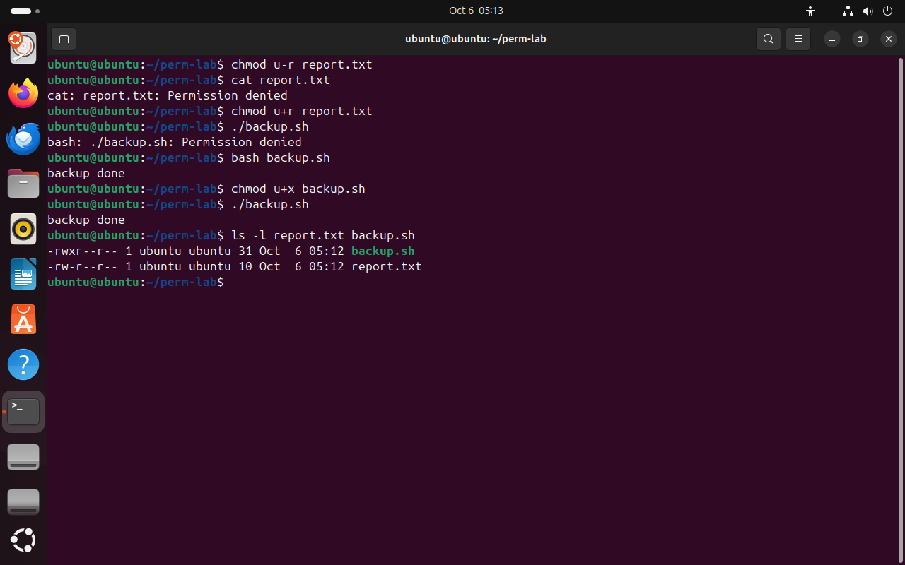
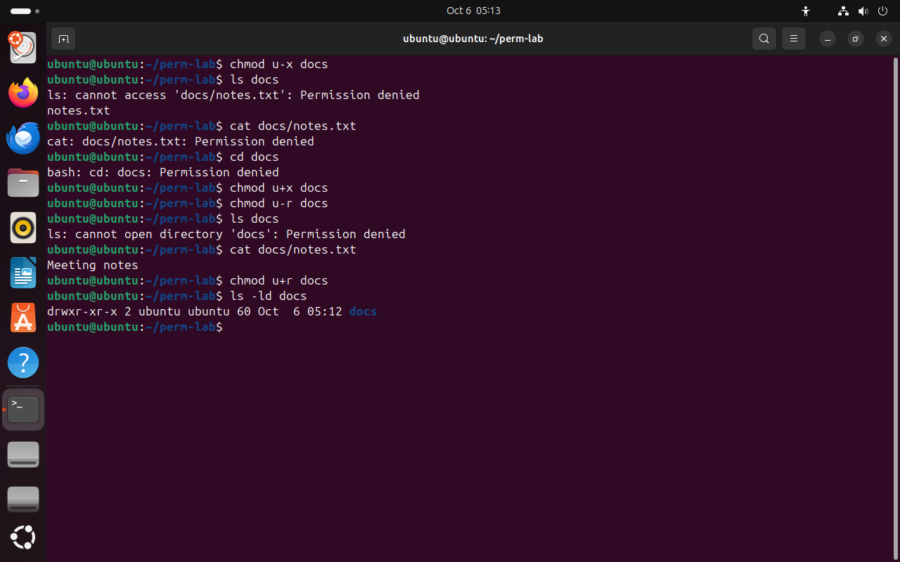
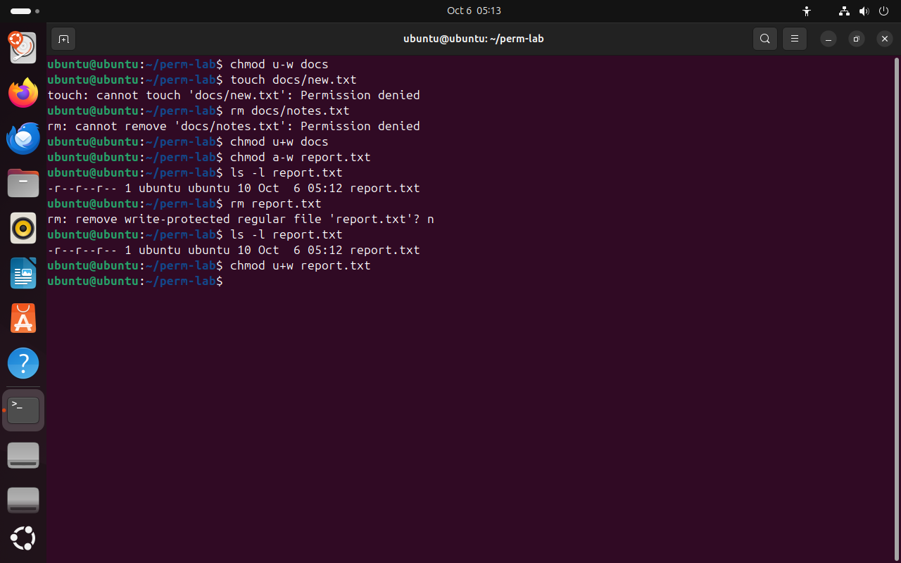

Часть 2 из 7
Что разрешают r, w и x
В этой части проверим на опытах, что каждое право разрешает обычному файлу и каталогу, и разберём, почему удаление файла зависит от прав каталога.
2.1 Права файла
r у файла разрешает читать содержимое: cat, less, копирование. w разрешает изменять содержимое: редактор, дописывание через >>. x разрешает запускать файл как программу по его пути.
Право x нужно, только когда файл запускают напрямую: ./backup.sh. Команда bash backup.sh запускает программу bash, а она читает скрипт как обычный текст, поэтому ей хватает права r. По той же причине скрипт без x можно выполнить через bash; запуск запрещает только снятый r.
| Право | Для файла разрешает | Пример команды |
|---|---|---|
r | читать содержимое | cat report.txt, cp report.txt copy.txt |
w | изменять содержимое | echo text >> report.txt, сохранение в редакторе |
x | запускать как программу | ./backup.sh |
Ключ u-r команды chmod снимает у владельца право чтения, u+r возвращает его. В опытах этой части меняется одно право у владельца: u — владелец, - — снять, + — добавить.
chmod u-r report.txt# снять у владельца чтениечто делает
Что делает команда. Снимает у владельца право чтения файла report.txt.
По частям:
chmod- изменить права доступа
u-r- права буквами: снять у владельца право r
report.txt- какой файл или каталог (путь относительно текущего каталога)
cat report.txt# прочитать нельзячто делает
Что делает команда. Пытается вывести содержимое report.txt; без права r получает отказ.
По частям:
cat- вывести содержимое файла
report.txt- какой файл вывести (путь относительно текущего каталога)
chmod u+r report.txt# вернуть чтениечто делает
Что делает команда. Возвращает владельцу право чтения report.txt.
По частям:
chmod- изменить права доступа
u+r- права буквами: добавить владельцу право r
report.txt- какой файл или каталог (путь относительно текущего каталога)
./backup.sh# запуск по пути: x нетчто делает
Что делает команда. Запускает скрипт backup.sh по пути; для этого нужно право x.
По частям:
./backup.sh- запустить файл backup.sh из текущего каталога как программу
bash backup.sh# bash читает скрипт как текстчто делает
Что делает команда. Запускает bash, который читает скрипт как текст и выполняет его; хватает права r.
По частям:
bash- запустить оболочку bash и выполнить команды из файла
backup.sh- файл скрипта (путь относительно текущего каталога)
chmod u+x backup.sh# добавить владельцу выполнениечто делает
Что делает команда. Добавляет владельцу право выполнения backup.sh.
По частям:
chmod- изменить права доступа
u+x- права буквами: добавить владельцу право x
backup.sh- какой файл или каталог (путь относительно текущего каталога)
./backup.shчто делает
Что делает команда. Запускает скрипт backup.sh по пути; для этого нужно право x.
По частям:
./backup.sh- запустить файл backup.sh из текущего каталога как программу
ls -l report.txt backup.shчто делает
Что делает команда. Выводит строки двух файлов, чтобы сравнить их права.
По частям:
ls- вывести содержимое каталога
-l- подробный список: права, владелец, группа, размер
report.txt- что показать (путь относительно текущего каталога)
backup.sh- что показать (путь относительно текущего каталога)
- 1без r cat получает отказ
- 2без x запуск по пути запрещён
- 3bash запускает скрипт, ему хватает r
- 4после chmod u+x скрипт запускается
- 5у владельца теперь rwx


Весь снимок ↗Чтение файла без r, запуск скрипта без x и с x.
Что показывает снимок. Без r файл не читается; без x скрипт не запускается по пути, но bash выполняет его, прочитав как текст; после u+x у владельца rwx.
Где это пригодится. Скрипт, скачанный из интернета, запускают по пути только после chmod u+x; сообщение Permission denied при запуске чаще всего означает, что x нет.
2.2 Права каталога
Каталог — это список записей «имя → номер inode». Права каталога относятся к этому списку; права файлов внутри задаются отдельно. r разрешает читать список имён. x разрешает входить в каталог и обращаться к файлам по имени: открыть файл, узнать его свойства, перейти внутрь командой cd. w разрешает менять список: создавать, удалять и переименовывать файлы.
Права каталога можно сравнить с комнатой со стеклянной дверью. r — смотреть через стекло и видеть, что внутри лежит. x — открыть дверь ключом и взять вещь, название которой знаете, даже если стекло закрашено. w — приносить вещи в комнату и выносить их. Без x вы видите вещи через стекло, но взять ни одну не можете.
Права r и x у каталога действуют независимо. Каталог с r без x: ls выводит имена, но не может узнать свойства файлов и сообщает об ошибке для каждого, а открыть файл нельзя. Каталог с x без r: список не читается, но файл с известным именем открывается. Второе сочетание иногда применяют для каталогов, в которых файлы раздают по прямым ссылкам.
chmod u-x docs# снять проходчто делает
Что делает команда. Снимает у владельца право прохода в каталог docs.
По частям:
chmod- изменить права доступа
u-x- права буквами: снять у владельца право x
docs- какой файл или каталог
ls docs# имена видны, свойства — нетчто делает
Что делает команда. Выводит имена файлов каталога docs.
По частям:
ls- вывести содержимое каталога
docs- что показать
cat docs/notes.txt# файл не открытьчто делает
Что делает команда. Пытается прочитать файл внутри каталога docs.
По частям:
cat- вывести содержимое файла
docs/notes.txt- какой файл вывести (путь относительно текущего каталога)
cd docs# войти нельзячто делает
Что делает команда. Пытается войти в каталог docs.
По частям:
cd- сменить текущий каталог
docs- куда перейти
chmod u+x docs# вернуть проходчто делает
Что делает команда. Возвращает владельцу право прохода в docs.
По частям:
chmod- изменить права доступа
u+x- права буквами: добавить владельцу право x
docs- какой файл или каталог
chmod u-r docs# снять чтение спискачто делает
Что делает команда. Снимает у владельца право читать список имён docs.
По частям:
chmod- изменить права доступа
u-r- права буквами: снять у владельца право r
docs- какой файл или каталог
ls docs# список не читаетсячто делает
Что делает команда. Выводит имена файлов каталога docs.
По частям:
ls- вывести содержимое каталога
docs- что показать
cat docs/notes.txt# файл по имени открываетсячто делает
Что делает команда. Пытается прочитать файл внутри каталога docs.
По частям:
cat- вывести содержимое файла
docs/notes.txt- какой файл вывести (путь относительно текущего каталога)
chmod u+r docsчто делает
Что делает команда. Возвращает владельцу право читать список имён docs.
По частям:
chmod- изменить права доступа
u+r- права буквами: добавить владельцу право r
docs- какой файл или каталог
ls -ld docs# права восстановленычто делает
Что делает команда. Выводит строку самого каталога docs, чтобы убедиться, что права восстановлены.
По частям:
ls- вывести содержимое каталога
-l- подробный список: права, владелец, группа, размер
-d- показать сам каталог, а не его содержимое
docs- что показать
- 1без x: ls видит имя notes.txt, но не может прочитать его свойства
- 2без x файл не открыть и в каталог не войти
- 3без r список имён не читается
- 4без r файл с известным именем открывается


Весь снимок ↗Каталог docs без права x и без права r.
Что показывает снимок. Без x у каталога имя файла видно, но ни файл, ни каталог не открываются; без r список не читается, а файл с известным именем открывается.
Где это пригодится. Если пользователь не может открыть файл с правильными правами, проверяют x у каждого каталога на пути к нему — так закрыт домашний каталог от чужих.
2.3 Удаление зависит от каталога
Удаление файла меняет список каталога, содержимое файла при этом не трогается. Поэтому решает право w у каталога. В каталоге без w нельзя ни создать, ни удалить файл, даже если у самого файла права rw-. И наоборот: файл с правами r--r--r-- удаляется, если у каталога есть w.
rm перед удалением файла без права записи задаёт вопрос remove write-protected regular file?. Вопрос задаёт сама программа rm, система удаление не запрещает: ответ y удалит файл. Ключ -f отключает вопрос.
chmod u-w docs# снять запись в каталогчто делает
Что делает команда. Снимает у владельца право менять список каталога docs.
По частям:
chmod- изменить права доступа
u-w- права буквами: снять у владельца право w
docs- какой файл или каталог
touch docs/new.txt# создать нельзячто делает
Что делает команда. Пытается создать файл в каталоге docs.
По частям:
touch- создать пустой файл
docs/new.txt- какой файл (путь относительно текущего каталога)
rm docs/notes.txt# удалить нельзячто делает
Что делает команда. Пытается удалить файл из каталога docs.
По частям:
rm- удалить файл
docs/notes.txt- что удалить (путь относительно текущего каталога)
chmod u+w docsчто делает
Что делает команда. Возвращает владельцу право менять список каталога docs.
По частям:
chmod- изменить права доступа
u+w- права буквами: добавить владельцу право w
docs- какой файл или каталог
chmod a-w report.txt# снять запись у файла для всехчто делает
Что делает команда. Снимает право записи у всех трёх троек файла report.txt.
По частям:
chmod- изменить права доступа
a-w- права буквами: снять у всех право w
report.txt- какой файл или каталог (путь относительно текущего каталога)
ls -l report.txtчто делает
Что делает команда. Выводит строку файла report.txt с правами.
По частям:
ls- вывести содержимое каталога
-l- подробный список: права, владелец, группа, размер
report.txt- что показать (путь относительно текущего каталога)
rm report.txt# rm спрашиваетчто делает
Что делает команда. Удаляет report.txt; у файла без права записи rm сначала спрашивает подтверждение.
По частям:
rm- удалить файл
report.txt- что удалить (путь относительно текущего каталога)
n# не удалятьls -l report.txt# файл на местечто делает
Что делает команда. Выводит строку файла report.txt с правами.
По частям:
ls- вывести содержимое каталога
-l- подробный список: права, владелец, группа, размер
report.txt- что показать (путь относительно текущего каталога)
chmod u+w report.txtчто делает
Что делает команда. Возвращает владельцу право записи report.txt.
По частям:
chmod- изменить права доступа
u+w- права буквами: добавить владельцу право w
report.txt- какой файл или каталог (путь относительно текущего каталога)
- 1без w у каталога запись в список запрещена
- 2r--r--r--: у файла записи нет ни у кого
- 3rm только спрашивает: удаление решает каталог
- 4после ответа n файл на месте


Весь снимок ↗Без w у каталога нельзя создать и удалить файл; файл без w rm удаляет после вопроса.
Что показывает снимок. Без w у каталога файлы не создаются и не удаляются; у файла без w rm только спрашивает подтверждение, удаление решает каталог.
Где это пригодится. Чтобы защитить файлы от удаления, права меняют у каталога; права самого файла защищают только содержимое.
Итоги части 2
- У файла:
r— читать,w— изменять,x— запускать по пути;bash скриптхватает праваr. - У каталога:
r— читать список имён,x— входить и обращаться к файлам по имени,w— создавать, удалять и переименовывать файлы. - Без
xу каталога файлы недоступны, даже если имена видны. - Удалить файл можно, если у каталога есть право
w; права самого файла на удаление не влияют.
В отчётСнимок с опытом «каталог без x и без r» и объяснение каждой ошибки.